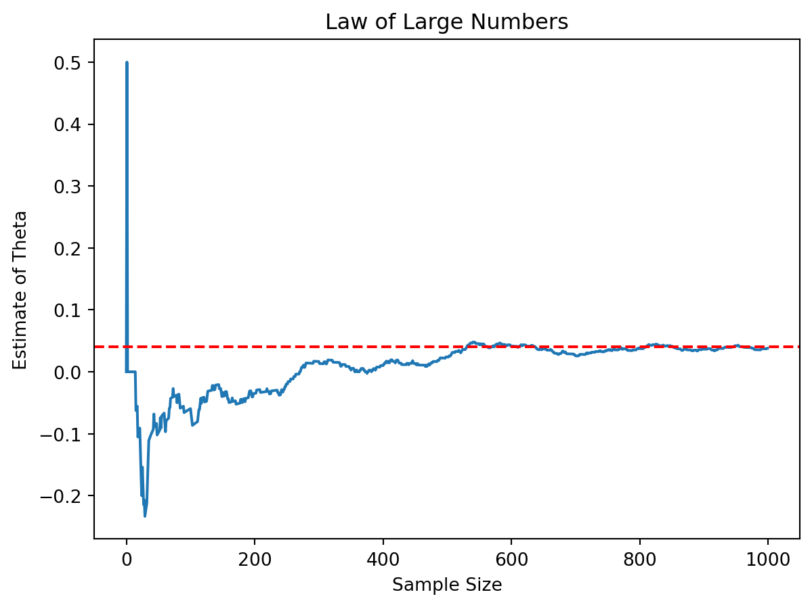
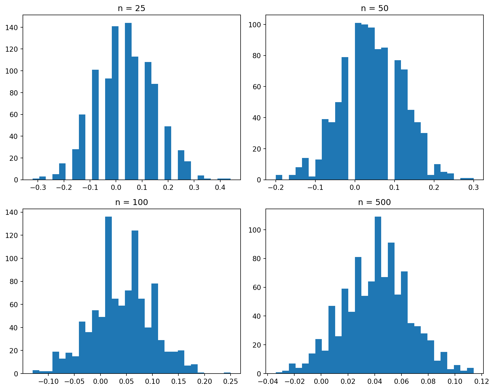

import numpy as np
np.random.seed(42)
n = 1000
pi_A = 0.22
pi_B = 0.18
A = np.random.binomial(1, pi_A, n)
B = np.random.binomial(1, pi_B, n)
theta_hat = A.mean() - B.mean()
theta_hatnp.float64(0.038000000000000006)Simulating Key Ideas from Classical Frequentist Statistics
Jin Liu
April 15, 2026
I run a website where visitors can sign up to receive a newsletter. To improve engagement, I want to test which version of a call-to-action (CTA) leads to more sign-ups.
CTA A reads “Sign up for our newsletter here!”, while CTA B reads “Stay up to date by signing up!”. These two versions may influence user behavior differently.
To evaluate their effectiveness, I conduct an A/B test. In this experiment, visitors are randomly assigned to see either CTA A or CTA B, and I compare the sign-up rates between the two groups to determine which performs better.
Each visitor either signs up or does not, so their outcome can be modeled as a Bernoulli random variable with success probability \(\pi\).
Since the CTA may affect behavior, I allow different probabilities for each group: \(\pi_A\) for CTA A and \(\pi_B\) for CTA B.
The key quantity of interest is the difference:
\[ \theta = \pi_A - \pi_B \]
which measures how much better one CTA performs compared to the other.
I estimate this using the difference in sample means:
\[ \hat{\theta} = \bar{X}_A - \bar{X}_B \]
Since the outcomes are binary (0 or 1), the sample mean corresponds to the observed sign-up rate.
In real-world scenarios, I do not know the true values of \(\pi_A\) and \(\pi_B\). However, for this exercise, I set them manually to better understand the behavior of my estimator.
I assume:
\[ \pi_A = 0.22, \quad \pi_B = 0.18 \]
so the true difference is \(\theta = 0.04\).
The Law of Large Numbers states that as the sample size increases, the sample mean converges to the true population mean. This gives me confidence that my estimator \(\hat{\theta}\) becomes more accurate as I collect more data.

From the plot, I can see that the estimate is unstable with small samples but gradually converges toward the true value of 0.04 as more observations are included.
To understand the precision of our estimate, I use bootstrapping. Bootstrapping is a resampling method where I repeatedly sample from my observed data (with replacement) and compute the statistic of interest.
np.float64(0.017650398749036806)I can compare this to the analytical standard error:
np.float64(0.017766823013696063)The two values are very close, which confirms that bootstrapping provides a reliable estimate of uncertainty.
A 95% confidence interval can be constructed as:
(np.float64(0.003405218451887869), np.float64(0.07259478154811214))This interval suggests that the true difference lies within this range with high probability.
The Central Limit Theorem states that as the sample size increases, the sampling distribution of the estimator becomes approximately normal, regardless of the underlying distribution.
import matplotlib.pyplot as plt
sample_sizes = [25, 50, 100, 500]
fig, axes = plt.subplots(2, 2, figsize=(10,8))
for i, n in enumerate(sample_sizes):
estimates = []
for _ in range(1000):
A_s = np.random.binomial(1, pi_A, n)
B_s = np.random.binomial(1, pi_B, n)
estimates.append(A_s.mean() - B_s.mean())
ax = axes[i//2, i%2]
ax.hist(estimates, bins=30)
ax.set_title(f"n = {n}")
plt.tight_layout()
plt.show()
As the sample size increases, the distribution becomes smoother and more bell-shaped, illustrating the Central Limit Theorem.
I test the null hypothesis:
\[ H_0: \theta = 0 \]
against the alternative:
\[ H_1: \theta \neq 0 \]
I compute the test statistic:
np.float64(0.032450415036087366)A small p-value suggests that I can reject the null hypothesis and conclude that the two CTAs perform differently.
I can also represent the A/B test as a regression problem.
import numpy as np
import pandas as pd
import statsmodels.api as sm
np.random.seed(42)
n = 1000
pi_A = 0.22
pi_B = 0.18
A = np.random.binomial(1, pi_A, n)
B = np.random.binomial(1, pi_B, n)
Y = np.concatenate([A, B])
D = np.concatenate([np.ones(len(A)), np.zeros(len(B))])
df = pd.DataFrame({
"Y": Y,
"D": D
})
X = sm.add_constant(df["D"])
model = sm.OLS(df["Y"], X).fit()
model.summary()| Dep. Variable: | Y | R-squared: | 0.002 |
|---|---|---|---|
| Model: | OLS | Adj. R-squared: | 0.002 |
| Method: | Least Squares | F-statistic: | 4.570 |
| Date: | Wed, 15 Apr 2026 | Prob (F-statistic): | 0.0327 |
| Time: | 13:46:21 | Log-Likelihood: | -991.64 |
| No. Observations: | 2000 | AIC: | 1987. |
| Df Residuals: | 1998 | BIC: | 1998. |
| Df Model: | 1 | ||
| Covariance Type: | nonrobust |
| coef | std err | t | P>|t| | [0.025 | 0.975] | |
|---|---|---|---|---|---|---|
| const | 0.1780 | 0.013 | 14.161 | 0.000 | 0.153 | 0.203 |
| D | 0.0380 | 0.018 | 2.138 | 0.033 | 0.003 | 0.073 |
| Omnibus: | 434.378 | Durbin-Watson: | 1.932 |
|---|---|---|---|
| Prob(Omnibus): | 0.000 | Jarque-Bera (JB): | 777.046 |
| Skew: | 1.518 | Prob(JB): | 1.85e-169 |
| Kurtosis: | 3.320 | Cond. No. | 2.62 |
The coefficient on \(D\) represents the difference in means between the two groups, which is the same as \(\hat{\theta}\).
This shows that hypothesis testing and regression are closely connected.
If I repeatedly check the results during the experiment, I increase the chance of finding a false positive.
def simulate_peeking():
A = np.random.binomial(1, 0.2, 1000)
B = np.random.binomial(1, 0.2, 1000)
for i in range(100, 1001, 100):
A_sub = A[:i]
B_sub = B[:i]
pA = A_sub.mean()
pB = B_sub.mean()
theta = pA - pB
se = np.sqrt((pA*(1-pA)/i) + (pB*(1-pB)/i))
if se > 0:
z = theta / se
p = 2 * (1 - norm.cdf(abs(z)))
if p < 0.05:
return 1
return 0
results = [simulate_peeking() for _ in range(1000)]
np.mean(results)np.float64(0.177)The result shows that the false positive rate is much higher than 5%, which demonstrates why peeking is problematic.
In practice, this means I should avoid repeatedly testing during an experiment unless I adjust for it.
In this post, I used simulation to explore key ideas in frequentist statistics through an A/B testing framework. The results demonstrate how estimators behave in large samples, how uncertainty can be quantified using bootstrap methods, and how hypothesis testing helps guide decision-making.
Overall, this exercise highlights the importance of careful experimental design and proper statistical inference when evaluating real-world business decisions.